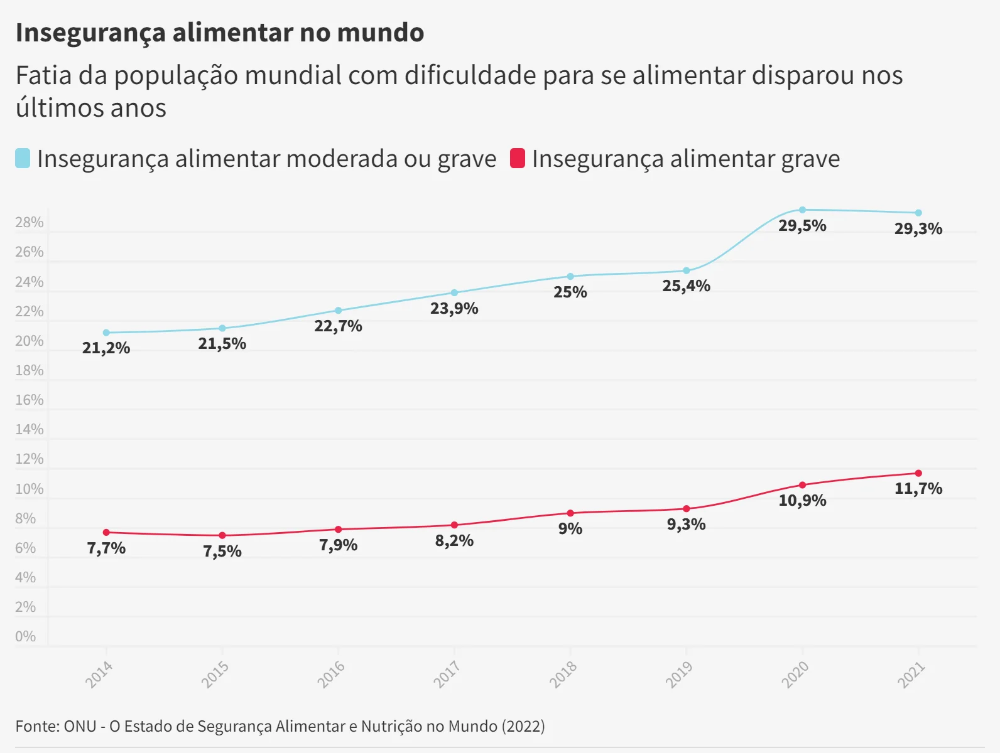

A fome mundial e a escassez de alimentos são problemas urgentes que afetam milhões de pessoas em todo o mundo. A ONU, com a ODS tem como uma meta para erradicar a fome e outro planos até 2030.
Para saber maisA fome é um mal que atinge toda a sociedade, em 2020, entre 720 milhões e 811 milhões de pessoas em todo o mundo estavam sofrendo de fome, cerca de 161 milhões a mais do que em 2019.
Nesse segundo gráfico vemos a diferença entre varios continentes dos anos de 2019 e 2020 com a certeza que os anos de COVID-19 pioraram esse cenário.
As IAs generativas são uma dessas tecnologias promissoras que podem ajudar a solucionar esses problemas. Na agricultura, elas podem ser utilizadas para criar modelos de cultivo mais eficientes e sustentáveis.
As IAs generativas também podem ser usadas para ajudar a resolver problemas de segurança alimentar em regiões remotas ou de difícil acesso, por meio da criação de modelos de agricultura vertical que podem ser utilizados para cultivar alimentos, com eficiência e produtividade.
Muitas soluções podem ser pensadas mas uma das mais influentes é o uso de IAs e a conscientização no uso da agua de forma mais eficiente.
Para produzir em maior quantidade gastando menos e com menor impacto ambiental, é preciso automatizar processos e usar cada vez mais tecnologia no processo produtivo. E também, prezar pela utilização sustentável da agua, quase metade do montante de água utilizada no agronegócio é desperdiçada, e para resolver esse problema podemos pensar no reuno da agua e no armazenamento da agua da chuva.
Isabella Freire - RM: 98908.
Victor Espanhol - RM: 552532.
Yasmin Santiago - RM: 550335.